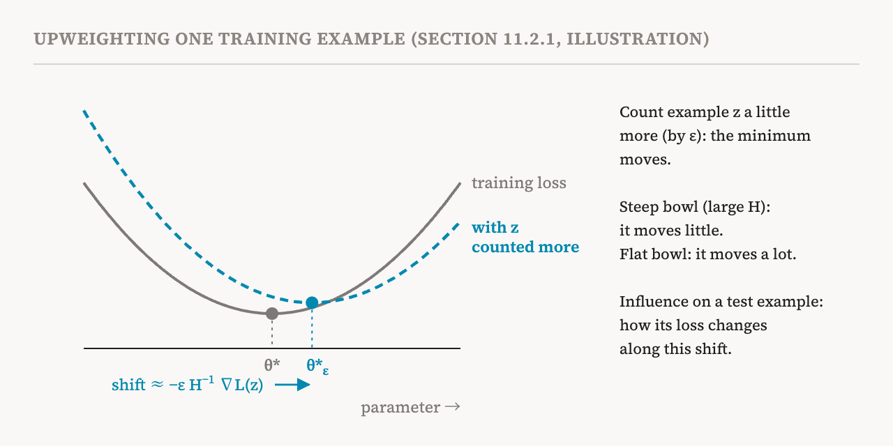
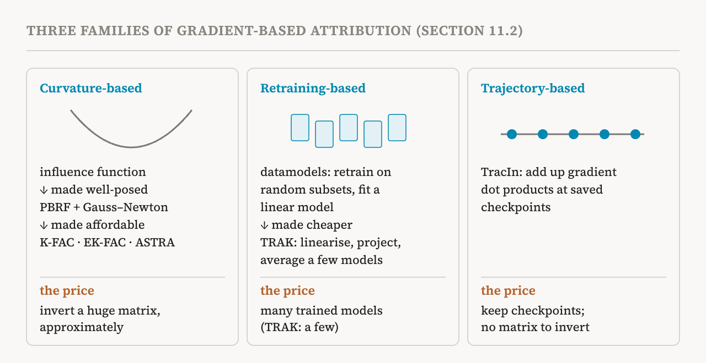

Part 29 traced a model's output to exact copies in its training data. This part covers the rest of the book's eleventh chapter, section 11.2 (pages 96–101), on gradient-based attribution. It is one of the most mathematical sections of the book; as elsewhere in the series, each formula is explained in words.
The question
Gradient-based methods estimate how much each training sample influenced a model's predictions. The central tool, the influence function, estimates how a model's parameters and predictions would change if one training sample were slightly upweighted, that is, counted for a little more during training. The brute-force way to find out is to retrain the model with that sample weighted more and see what changes. For a modern model, and for every sample worth asking about, that is far too expensive. Influence functions estimate the change without retraining.
The core idea, in words
Training finds parameters, written θ*, that make the average loss over all n training samples as small as possible. Now suppose one sample, call it z, is upweighted by a small amount ε: its loss is added to the objective once more, multiplied by ε. The new best parameters, θ*ε, have no closed formula, and finding them by training again is what we wanted to avoid.
The book's derivation uses one property of the new solution instead. At a minimum, the slope of the objective, its gradient, is zero in every direction. That condition links the parameters to ε, and a result from calculus called the implicit function theorem says how a solution of such an equation moves when ε changes a little. It needs two assumptions: the objective is smooth near the minimum, and the Hessian, the table of second derivatives that describes how the loss curves in every direction around the minimum, can be inverted. Under them, the parameters start to move, as ε grows from zero, in the direction of minus the inverse Hessian times the gradient of z's loss.
In words: the gradient of z's loss points the way the parameters would need to go to make the model better on z. Multiplying by the inverse Hessian adjusts that step for the shape of the loss. Where the training loss rises steeply, moving is costly for all the other samples, so the parameters barely move; where it is flat, they give way easily.

What we usually care about is the effect on something measured at test time, such as the loss on a test example. The chain rule turns the movement of the parameters into a change in that quantity: the gradient of the test loss, combined with the parameter movement above. The result is the influence score of the training sample on the test example. For small ε, the change in the test loss is approximately ε times the influence score. Its sign says whether counting the training example more would raise or lower the test loss, and its size says by how much, to a first approximation.
Why the original version fails, and a fix
The book is frank that this original form performs poorly in practice, because its assumptions rarely hold. A trained network's parameters are hardly ever exactly at a minimum. And the Hessian is usually impossible to invert, or numerically unstable, because some directions are almost perfectly flat, so inverting means dividing by numbers close to zero.
A classical response is the proximal Bregman response function, or PBRF, from 2022. Instead of asking for the exact minimum of the new objective, it asks a better-posed question: which parameters best respond to upweighting z, while keeping the model's predictions on the training set close to its original predictions, and keeping the parameters close to the trained ones? It has two ingredients. The first replaces the training loss with a Bregman divergence, which measures, using the loss itself, how far each new output has moved from the original output: the amount by which the loss at the new output exceeds a straight-line estimate made from the old one. The second is a proximity term, a penalty on the squared distance from the trained parameters, with a strength λ. Both terms are zero at the trained parameters and never negative, so without upweighting the trained parameters are already the best answer, whether or not training had converged.
The same argument with the implicit function theorem then goes through, with a different matrix in place of the Hessian: the generalised Gauss–Newton (GGN) matrix plus λ times the identity. The GGN combines, for each training example, how the model's outputs change with its parameters and how the loss curves as the outputs change. For common losses such as cross-entropy, the loss curves upwards as the outputs change, so the GGN never curves downwards in any direction, and adding λ makes the matrix invertible by construction, which the Hessian is not. The influence computed with this matrix is exactly the rate of change of the PBRF answer, and the 2022 study confirmed that such estimates agree well with the PBRF in practice. The title of that study puts the point well: if influence functions are the answer, what is the question? The answer it gives is the PBRF, not "what would retraining from scratch do".
Making it affordable: K-FAC and its successors
The GGN has one row and one column for every parameter. For a model with billions of parameters, it is far too large to store, let alone invert. Follow-up methods avoid computing the inverse directly by borrowing techniques from the optimisation literature.
Kronecker-Factored Approximate Curvature, K-FAC, from 2015, approximates a closely related matrix, the Fisher information matrix, built from the gradients of the model's log-probabilities for labels sampled from its own predictions. For common losses such as softmax cross-entropy, this matrix equals the GGN, so K-FAC can stand in for it. K-FAC makes two simplifications. It ignores curvature between different layers, keeping one block per layer. And within a layer, it treats the layer's input activations and the gradients flowing back to its outputs as independent, so the block becomes a Kronecker product of two small matrices, one from each. That needs far less memory, and each small factor can be inverted separately. For example, for a layer with 4,096 inputs and 4,096 outputs, the full block would have about 280 trillion entries, while the two factors together have about 34 million.
EK-FAC, from 2018, improved K-FAC by correcting its eigenvalues, and a 2023 study used it to scale influence functions to large language models. ASTRA, from 2025, goes further: it uses EK-FAC to speed up an iterative method that approximates multiplying by the inverse matrix, getting more accurate results with less tuning. These efforts are making influence functions practical for language models with billions of parameters.
Retraining, done cleverly: datamodels and TRAK
Other methods return to retraining, but cleverly. The naive version upweights or removes each training sample, retrains, and watches the output on the test example. Datamodels, from 2022, does better: it trains many models on random subsets of the training data, then fits a linear regression that predicts the model's output on the test example from which training samples each model saw. Each fitted coefficient is one sample's influence on that test example. But it still needs many trained models.
TRAK, from 2023, is a more efficient alternative. It first approximates the trained model as a linear model, using a first-order Taylor expansion around its parameters. It then uses random projections to shrink the gradients to far fewer dimensions and estimates influence in that smaller space. Finally, it averages the estimates over a small number of trained models to reduce the effect of training randomness. TRAK reaches attribution quality comparable to datamodels at much lower cost.
Following the training run: TracIn
TracIn, from 2020, estimates influence from gradients along the training run, with no inverse Hessian at all. Its idea starts from a single step of stochastic gradient descent on a training sample z. That step moves the parameters against z's gradient by an amount set by the learning rate. To a first approximation, the step changes the loss on a test example by minus the learning rate times the dot product of the test example's gradient and z's gradient. If the dot product is positive, the update lowers the test loss; if negative, it raises it.
TracIn extends this across training. Its practical version, TracInCP, adds up these learning-rate-weighted dot products over a set of saved checkpoints. A larger positive score means that z did more to reduce the test loss. Unlike Hessian-based influence functions, TracIn needs no matrix inversion. But because it looks only at the checkpoints that were kept, its estimate may be less accurate. As part 26 noted, the separate contribution of each checkpoint also shows when an example mattered most.

What gradients can find that matching cannot
The book illustrates the difference from part 29 with a translation task. The prompt is a short English passage about playing frisbee with a dog, followed by the word "Chinese:". A gradient-based method picked out, as influential, a training document of English sentences about a celebrity's music and film career, each followed by a Chinese translation of uneven quality. Nothing in it matches the model's output word for word. But it is the kind of data that teaches a model to put English into Chinese. The book's observation is that influence functions can identify training documents that shaped the translation even without exact matches, capturing influence beyond what verbatim methods can show.
Recent extensions and limits
Recent work extends attribution to deal with the randomness of training. Distributional training data attribution estimates how the distribution of a model's outputs, over many possible training runs, depends on the dataset. Variants of TRAK have been built for diffusion models, which generate images. And newer work connects attribution directly to mechanistic interpretability. Concept Influence, from 2026, attributes at the level of semantic concepts represented inside the model, such as sparse autoencoder features, rather than at the level of a whole output. That brings training data attribution closer to the mechanistic goal of understanding how training data shape specific internal computations.
But fundamental problems remain: approximation errors that compound over the training trajectory, variation between training runs caused by randomness such as the order of the data, and the memory and computing costs of scaling to frontier models.
The chapter in brief
The book's summary of chapter 11 is short. Training data attribution traces behaviour back to the training data. Verbatim methods such as OLMoTrace identify memorised spans; gradient-based methods such as influence functions estimate how much individual training samples contribute to predictions. Both remain limited at scale, and recent work has begun linking attribution to internal features and mechanisms. With this, the book has surveyed the main families of interpretability methods. Its next chapter steps back and sorts them into six research orientations.
| Method | Main idea | Cost and catch |
|---|---|---|
| Classical influence function | Upweight a sample and adjust for the curvature of the loss | Assumes a minimum and an invertible Hessian; both rarely hold |
| PBRF with the GGN | Respond to upweighting while staying close to the trained model | Well-posed, but the matrix is enormous |
| K-FAC, EK-FAC, ASTRA | Approximate the curvature with small per-layer factors | Approximations that reach billions of parameters |
| Datamodels | Retrain on random subsets and fit a linear model | Needs very many trained models |
| TRAK | Linearise the model, project the gradients, average a few models | Close to datamodels at much lower cost |
| TracIn | Add up gradient dot products over checkpoints | No inversion; depends on which checkpoints were kept |
| Term | Meaning |
|---|---|
| Influence function | An estimate of how predictions would change if one training example counted slightly more |
| Upweighting | Counting one training example a little more in the training objective |
| Gradient | The direction in which a loss rises fastest as the parameters change, and how fast |
| Hessian | The second derivatives of the loss: how it curves in every direction |
| Implicit function theorem | A result about how the solution of an equation moves when one of its quantities changes slightly |
| Influence score | The first-order effect of a training example on a quantity measured at test time |
| PBRF | The proximal Bregman response function, the well-posed question that practical influence functions answer |
| Generalised Gauss–Newton (GGN) | A curvature matrix built from how outputs respond to parameters; invertible once λ is added |
| Fisher information matrix | A curvature matrix built from the model's own predicted labels; equal to the GGN for common losses |
| K-FAC | Approximating each layer's curvature with two small matrices |
| Datamodels | Predicting an output from which training examples were included, by training many models |
| TRAK | A cheaper stand-in for datamodels, using a linearised model and random projections |
| TracIn | Adding up gradient dot products across saved checkpoints |
Next, part 31 opens the group on research directions with the book's six orientations of interpretability research.